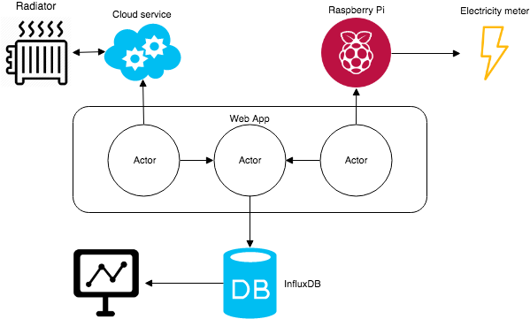
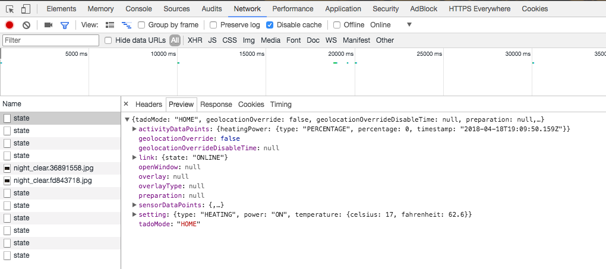
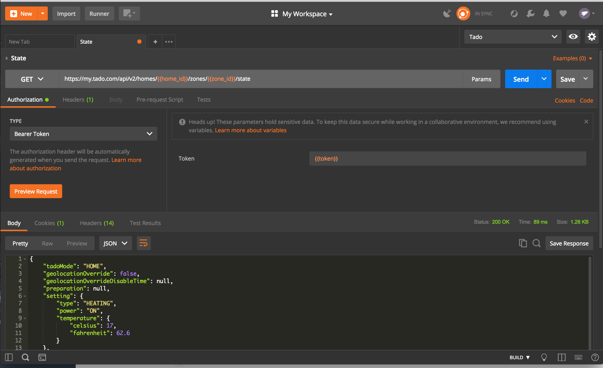
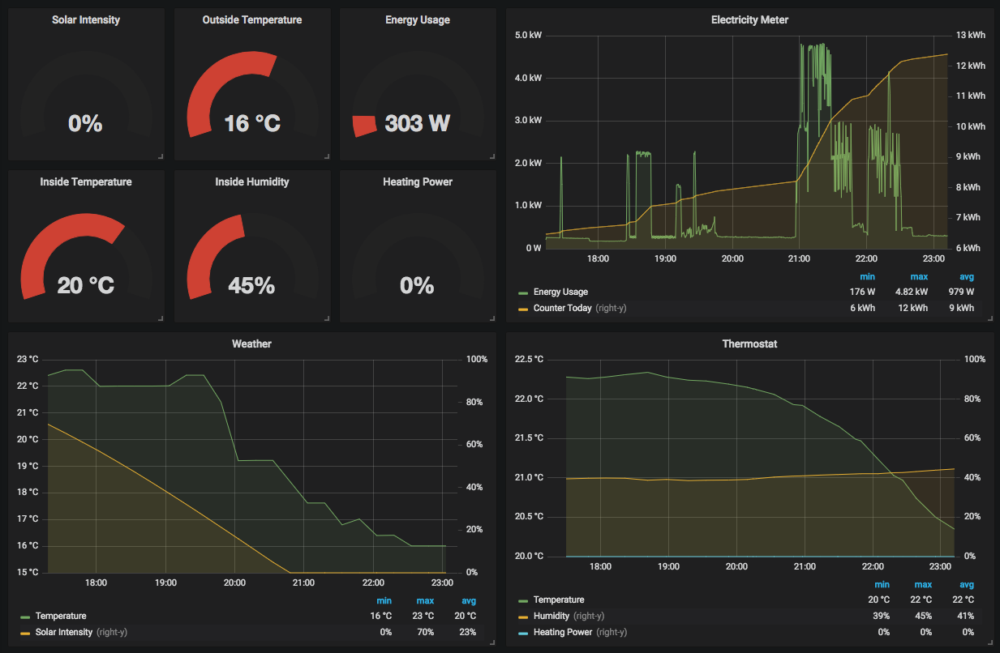

### Why?
* Visualize data from my new smart thermostat
* And add other devices
* Build a proof of concept
* Learn something new
* Have fun
### Disclaimer
None of this code is production ready ...
Overview of technologies
### Play framework
* Lightweight and stateless web framework
* Asynchronous model built on Akka
* Useful libraries for this project:
* `play-ws`
* `play-json`
### InfluxDB
* Time series database
* Ingestion of millions of data points per second
* Real-time queries for large datasets
* Downsampling of older data
* Tagging of values
* HTTP API
### Grafana
* Platform for analytics and monitoring
* Support for a lot of different datasources
* Sharing created dashboards
Architecture

### Three steps
- Get the data
- Store the data
- Visualize the data
### Getting the data
* Inspect API call with Chrome developers tools
* Replicate the request with Curl or Postman
* Making the request with Scala code
Note:
At work also needed, sometimes docs are missing
You want to explore the data from the endpoint
Inspecting using Chrome

Making requests with Postman

### Making requests with Scala
```scala
val response: Future[WSResponse] =
ws.url(s"$baseUrl/$path")
.addHttpHeaders(headers.toSeq: _*)
.get
```
### Processing the request
```scala
ws.url(s"$baseUrl/$path")
.addHttpHeaders(headers.toSeq: _*)
.get
.map { response =>
response.status match {
case 200 => response.body
case _ => //throw error
}
}
```
### Mapping to Scala code
```scala
import play.api.libs.json._
import play.api.libs.functional.syntax._
case class Measurement(temp: Double, humidity: Double)
implicit val measurementReads: Reads[Measurement] = (
(__ \ "temp").read[Double] and
(__ \ "humidity").read[Double] and
)(Measurement)
```
### Automated mapping
```scala
import play.api.libs.json._
case class Measurement(temp: Double, humidity: Double)
implicit val measurementReads: Reads[Measurement] =
Json.reads[Measurement]
```
### Custom JsonNaming
* Default is `camelCase`
* Something different like `snake_case`
```scala
implicit val config = JsonConfiguration(SnakeCase)
```
* Or roll your own
```scala
object PascalCase extends JsonNaming {
override val toString = "PascalCase"
def apply(prop: String): String = {
if (prop.length > 0)
prop.updated(0, prop.head.toUpper)
else prop
}
}
```
### Processing the response
```scala
ws.url(s"$baseUrl/$path")
.addHttpHeaders(headers.toSeq: _*)
.get
.map { response =>
response.status match {
case 200 => response.json.as[Measurement]
case _ => //throw error
}
}
```
Note:
Instead of the raw response body
You can also use `asOpt` or `validate`
To do data validation
### Results so far
* Calling webservices with Scala
* Automated mapping to Scala case classes
### Scheduling
* We need some periodic polling of the sensors
* Something like `cron`
* Akka has a scheduler
* Not for long-term scheduling
* Use `akka-quartz-scheduler`
### Sceduling messages with Akka
```scala
val Tick = "tick"
class TickActor extends Actor {
def receive = {
case Tick => //Do something
}
}
val tickActor = system.actorOf(Props(classOf[TickActor], this))
system.scheduler.scheduleOnce(
1 second, tickActor, Tick)
system.scheduler.schedule(
1 second, 5 seconds, tickActor, Tick)
```
### Akka Timers
```scala
class TimerActor extends Actor with Timers {
import TimerActor._
timers.startSingleTimer(TickKey, FirstTick, 1 second)
def receive = {
case FirstTick => // do something useful here
timers.startPeriodicTimer(TickKey, Tick, 5 seconds)
case Tick => // do something useful here
}
}
```
Note:
New in Akka 2.5
Send messages to the actor itself
### Akka Timers advantages
* A timer has a key, to cancel or replace it
* Timers are bound to the lifecycle of the actor
### Storing measurements
* Create an actor that accepts a measurement
* And store the received measurement in InfluxDB
* Use `play-ws` to use the HTTP API
* Reuse existing library for connecting to InfluxDB
Note:
Reuse is nice, a lot of libraries exist to help you
Didn't feel like writing it myself
Did solve a bug in the library, so that way you also help
### Storing measurements
```scala
class StorageActor extends Actor {
private val db = new InfluxDB(???)
override def receive: Receive = {
case Store(m) =>
db.store(m) onComplete {
case Success(_) => ???
case Failure(t) => ???
}
}
}
object StorageActor {
case class Store(measurement: Measurement)
}
```
### Visualizing the data
* Generate dynamic dashboards with Grafana

### Improvements
* Akka supervision
* Kafka broker for raw data
* Automated deployments with Docker containers
Note:
execution context: chose a different from the default one also used by your actor system and play framework
### Conclusions
* Easy to create a PoC with Scala ecosystem
* Easy steps to make this a fully scalable production ready solution
* And had a lot of fun
### Code
Source code and presentation can be found on my Github
[https://github.com/wjglerum/iot-collector](https://github.com/wjglerum)